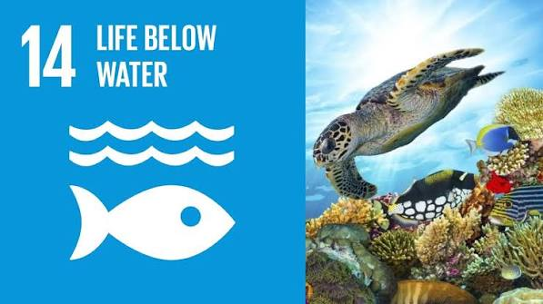

People
Destroying our oceans will decrease the amount of food on our plates causing famine for certain communities.
Sustainability Advisory Committee
Sustainable Development Goal 14
Committing to saving our oceans, its inhabitants both flora and fauna.
Learn More
The Challenge
Life below water is important to our planet because it serves as our primary life support; producing over 50% of the Earth's oxygen means we can't live without it.
Goal 14 encourages urgent action to reduce the damage to our oceans, building a brigther future for the next generation.
The Impact
Destroying our oceans will decrease the amount of food on our plates causing famine for certain communities.
polutants are destroying our oceans, beautiful coral reefs and animals are suffering from our actions.
Decisions made today will influence the oceans inherited by future generations.
TAKE ACTION
Individual actions alone cannot solve ocean polution, but sustainable choices can support wider environmental efforts.
01 Stop using microplastics - swap disposable for reuseable, check cosmetics and laundry and flush only safe items.
02 Stop runoff and chemical polution - keep drains clean, pick up pet waste and maintain vehicles.
03 East and shop responsibly - buy lower-trophic seafood, don't buy marine souvenirs and use reef-safe sun protection.
04 Lower carbon and protect habitats - reduce energy and travel emissions, respect water and coastal spaces and join local cleanups.
Continue Exploring